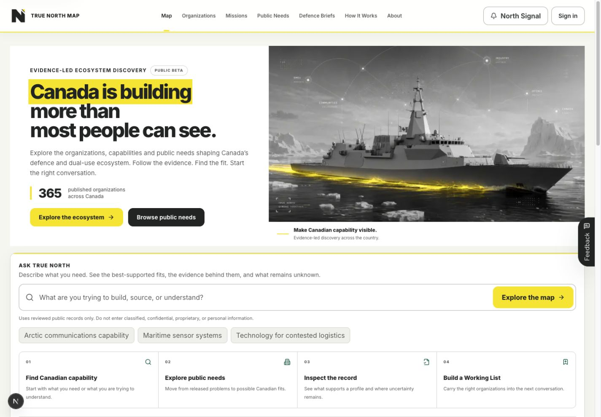

Partner overview · Public beta
Evidence-led ecosystem discovery
Canada is building more than most people can see.
True North Map helps people find Canadian defence and dual-use capability, understand where it may fit, inspect the public evidence and move into a better-informed conversation.
Make Canadian capability visible.

More than a company list
- Reviewed organizations and technologies
- Mission Areas and released Public Needs
- Source-linked assessments and visible gaps
- Private Working Lists and human introductions
One decision journey
Mission→What are you trying to understand?
Targets→Which Canadian organizations may be relevant?
Evidence→What supports the connection and what is missing?
Action→Save the right organizations or start a conversation.
Trust is part of the product
Reviewed public evidence · Transparent gaps · Human reviewMission links are reviewed assessments. Public Needs come from released, source-gated records. Neither implies endorsement, eligibility or classified demand.